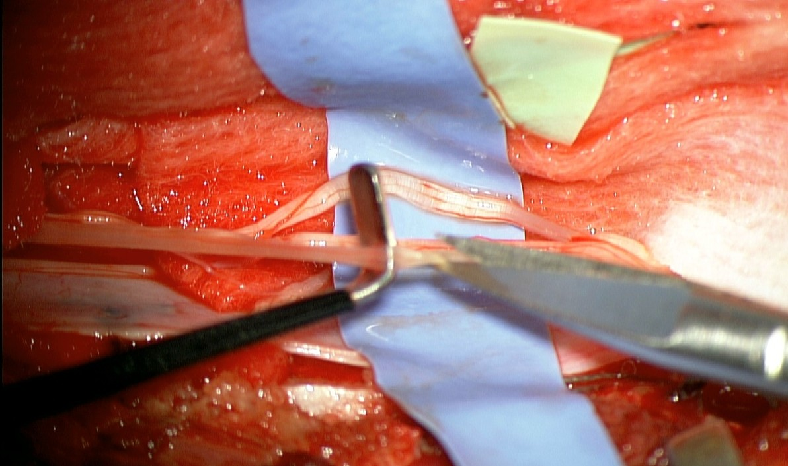

SDR to rozwijana od 50 lat wraz z postępem technik operacyjnych i komputeryzacji procedura neurochirurgiczna, która trwale redukuje spastyczność poprzez selektywne przecięcie włókien nerwowych odpowiedzialnych za nadmierne napięcie mięśni.
Dla kogo przeznaczona jest SDR?
Pacjenci z MPD o typie uszkodzenia pochodzenia piramidowego
Pacjenci z MPD w wieku 3 – 50 lat, optymalny wiek 3 – 10 roku życia.
Pacjennci z MPD w postaci: diplegii, hemiplegii, triplegii, tetraplegii
Pacjenci z MPD w każdej skali funkcjonalnej GMFCS – Najczęściej wykonywana u pacjentów z poziomami I, II i III. Dzieci w skali IV, V GMFCS wymagają szczegółowej kwalifikacji ze względu na częste występowanie objawów pozapiramidowych.
Pacjenci u których terapie fizjoterapeutyczne i leczenie farmakologiczne nie przyniosły oczekiwanych rezultatów - napięcie mięśniowe ogranicza ruchomość i utrudnia chodzenie i rehabilitację, Spastyczność powoduje ból lub deformacje stawów,
Pacjenci po implantacji Pompy baklofenowej – Pacjenci spastycznością uszkodzenia piramidowego. Możliwość zastosowania SDR w przypadku powikłań i wyczerpaniu baterii pompy
Pacjenci z dziedziczną postacią diplegii spastycznej
Pacjenci z innymi chorobami :(stwardnienie rozsiane, pourazowe uszkodzenia mózgu, uszkodzenia rdzenia, udary niedokrwienne, udary krwotoczne, choroby neurodegeneracyjne o objawach piramidowego uszkodzenia)
Jakie są korzyści SDR ?
Pacjenci po SDR doświadczają:
Poprawy chodu i równowagi
Redukcji bólu
Zwiększenia niezależności w codziennym życiu
Skala GMFCS Korzyści z SDR
I (samodzielne chodzenie) Poprawa płynności chodu, redukcja zmęczenia.
II (chodzenie z ograniczeniami) Większa stabilność, dłuższe dystanse.
III (chodzenie z pomocą) Możliwość ograniczenia wsparcia ortopedycznego.
IV (poruszanie się na wózku) Ułatwienie transferów, lepsza równowaga.
V (znaczne ograniczenia) Redukcja bólu, ułatwienie pielęgnacji.
Jakie są korzyści dla Pacjentów z Mózgowym Porażeniem Dziecięcym w zależności od rodzajy porażenia?
1. Diplegia:
Poprawa chodu u 91%, równowagi 75%, stania u 81%, siedzenia u 57% Pacjentów
Poprawa aktywności rehabilitacji u 88%, wytrzymałości u 77% Pacjentów
Poprawa uprawiania sportów rekreacyjnych u 43 % Pacjentów
Zmniejszenie bóli mięśni i stawów u 64% Pacjentów
2. Hemiplegia
93% Rodziców poleciłoby procedurę SDR innym rodzinom dzieci z MPD
Poprawa: chodu u 90%, siedzeniau 63%, równowagi u 87%, niezależności u 67% Pacjentów,
Zmniejszenie bóli mięśni i stawów u 70% Pacjentów
3. Triplegia
93% poleciłoby zabieg innym pacjentom
Poprawa wzorca poruszania się i stabilności ciała u 60% Pacjentów
Zmniejszenie dolegliwości bólowych u 60% Pacjentów
Czy SDR nadaje się dla Pacjentów z dziedziczną spastycznością ?
Pacjenci z genetyczną diplegią zmniejszają spastyczność o 89%
SDR nie pogarsza przebiegu choroby pacjentów z HSP
SDR jest realną opcją terapeutyczną u starannie wybranych dzieci z HSP, szczególnie u pacjentów chodzących
Większość pacjentów odnosi korzyści w zakresie dużej motoryki, ryzyko powikłań jest niskie
Pompę baklofenową stosowano u dzieci z ciężką i postępującą chorobą

Jak przebiega operacja i pobyt w szpitalu ?
1. Przygotowanie do operacji
Badania neurologiczne,
Badanie Fizjoterapeutyczne
Badania obrazowe (MRI głowy i kręgosłupa lędźwiowego, RTG)
Ocena neurochirurgiczna i ortopedyczna
2. Przebieg operacji 4-5 godzin
Zabieg w znieczuleniu ogólnym z monitorowaniem głębokości snu
Neurochirurg wykonuje niewielkie nacięcie w dolnej części kręgosłupa (Th12/L1).
Zabieg przebiega z pomocą monitorowania śródoperacyjnego, elektrostymulacją korzeni nerwowych, śródoperacyjną oceną fizjoterapeutyczną.
Neurochirurg określa, które korzenie są odpowiedzialne za nadmierne napięcie mięśni na podstawie dostarczonych danych komputerowych i śródoperacyjnego badania fizjoterapeuty
Neurochirurg przecina wybrane włókna nerwowe, co obniża spastyczność.
Na koniec tkanki szyte są warstwowo. Przywrócenie wyciętych kości kręgosłupa za pomocą płytek osteoplastycznych.
3. Pobyt w szpitalu
Pacjent zwykle pozostaje w szpitalu około 7- 10 dni.
Pierwsze ćwiczenia rehabilitacyjne rozpoczynają się już w ciągu 1–2 dni po zabiegu.
Pacjent wymaga intensywnej rehabilitacji 4x w tygodniu przez co najmniej 2 lata po operacji celem utrzymania nowego wzorca napięcia mięśniowego i poruszania się
Jakie są najczęstsze powikłania po SDR?
SDR jest bezpieczną procedurą, jednak możliwe skutki uboczne głównie obejmują:
Krótkoterminowe osłabienie mięśni
Przejściowe zaburzenia czucia
Ryzyko infekcji (rzadkość poniżej 3%)
Jakie mogą wystąpić zmiany w pierwszych tygodniach/miesiącach po SDR?
Problemy z kontrolą pęcherza moczowego (często przejściowe) – do 1–20% pacjentów.
Pozorne osłabienie kończyn dolnych (wynikająca z redukcji patologicznej spastyczności) – do 30% pacjentów w początkowym okresie, ale u większości ustępuje wraz z rehabilitacją i wzmocnieniem siły mięśni w ciągu średnio 4 miesięcy
Ból pleców po operacji – 5–15% pacjentów, zazwyczaj przejściowy.
Przejściowe zaburzenia czucia w nogach – około 8–15% przypadków.
Infekcja rany pooperacyjnej – bardzo rzadko, mniej niż 1–3%.
Problemy z gojeniem rany – 1–5%.
Jakie mogą być długoterminowe zmiany po SDR?
Hipotonia posturalna (osłabienie kontroli tułowia) – dotyczy 5–15% pacjentów, ale poprawia się wraz z rehabilitacją.
Trudności z równowagą i koordynacją – 10–25% pacjentów, zwłaszcza w przypadku niewystarczającej rehabilitacji.
Skolioza lub inne deformacje kręgosłupa – 5–10% pacjentów, porównywalnie z naturalnym przebiegiem choroby bez SDR
Konieczność wykonania korekcji ortopedycznych – 70% pacjentów wymaga korekcji ortopedycznych przykurczy ściegien, stawów zwykle 7 miesięcy po SDR. Szczególnie u osób z dłużej trwająca spastycznością
Jak zmniejszyć ryzyko powikłań po operacji SDR?
Doświadczenie zespołu chirurgicznego w operacjach wszystkich typów spastyczności
Intensywna rehabilitacja przedoperacyjna - wzmacnianie postawy ciała i stanu mięśni tułowia przed zabiegiem, Poprawa zakresów stawów kończyn przed operacją
Intensywna rehabilitacja pooperacyjna - Utrwalanie nowego wzorca napięcia mięśniowego i poruszania się po operacji
Jakie są długoterminowe opinie pacjentów po operacji rizotomii SDR?
Badania wskazują, że SDR jest skuteczną metodą leczenia spastyczności, która prowadzi do trwałej poprawy jakości życia pacjentów.
Jedyna metoda trwale redukująca spastyczność i jej powikłania – 90% Rodziców i dorosłych, którzy jako dzieci przeszli SDR poleciłoby tą metodę jako skuteczną i bezpieczną metodę leczenia MPD w każdym typie spastyczności
Poprawa motoryki kończyn górnych i innych mięśni ciała: u ponad 80% pacjentów zmniejsza się spastyczność kończyn górnych, zmniejszenie zeza, poprawa mowy, zmniejszenie dysfunkcji wegetatywnych
Efektywniejsza rehabilitacja i poprawa sprawności ruchowej: Zmniejszenie spastyczności ułatwia rehabilitację i naukę nowych umiejętności ruchowych.
Umożliwia poprawę siły w mięśniach spastycznych
Nie zmniejsza siły mięśni niespastycznych
Umożliwia poprawę wzorca chodu w analizach komputerowych chodu
Umożliwia zwiększenie zakresów ruchu w stawach kończyn dolnych
Umożliwia w 20% poprawę skrętu kości piszczelowej u dzieci
Lepiej rokująca przyszłość: Niższe ryzyko deformacji stawów i kręgosłupa wynikających z długotrwałej spastyczności.
Większa niezależność: Wzrost samodzielności w życiu codziennym, co przekłada się na poprawę komfortu życia całej rodziny.